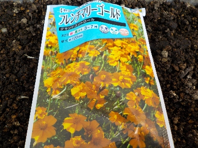
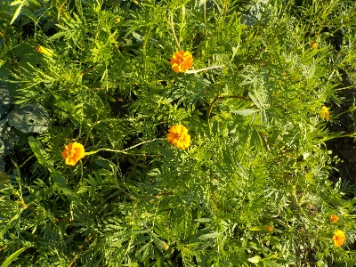
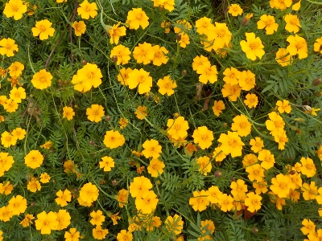

フレンチマリーゴールド（グランドコントロール）のタネを蒔きました。
更新日 : 2025/03/23

センチュウで困っているわけではないですが、効果があるといわれると気になって購入しました。
こういうものは畑に直播な気がしますが、少量のタネを買ったのでプランターとポットで育苗してから畑に植えるつもりです。
更新日 : 2025/03/23

センチュウで困っているわけではないですが、効果があるといわれると気になって購入しました。
こういうものは畑に直播な気がしますが、少量のタネを買ったのでプランターとポットで育苗してから畑に植えるつもりです。
更新日 : 2025/06/15

一株が大きいです。畑の隙間に植えようと思っていたんですが、これだけ大きいとある程度のスペースがないと植えれないですね。
ポット苗があるんですが、植える場所が決めれなくて植えれないままになっています。
更新日 : 2025/11/24

夏頃は上へ高く伸びて育っていましたが、涼しくなってきたら横に広がるようになりました。
そして小さい花が大量です。ぎっしり生えているので雑草を抑えてグランドカバーにもなっています。
なんか見た目がとってもいい。そんなに余ったスペースはないけど、来年は隅っことか縁にドンドン植えようと思いました。
センチュウとかコンパニオンプランツとか益虫のことなんてどうでもいい。ただ植えよう。